The Directions of Technical Change
Miklós Koren
Zsófia Bárány
Ulrich Wohak
2026
Suppose we observe a worker doing two tasks
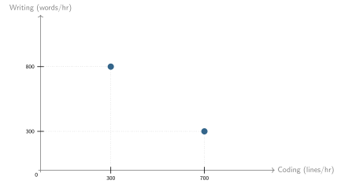
The worker can also do less: free disposal
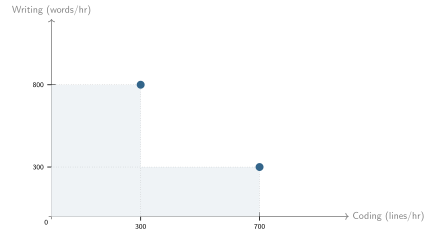
Time can be split across tasks: convex hull
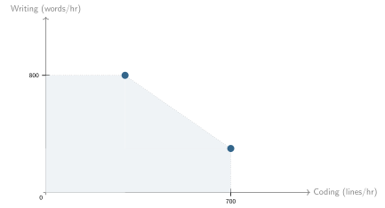
With perfect substitution: linear production possibility set (PPS)
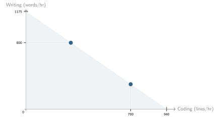
Many observed tasks for the same worker
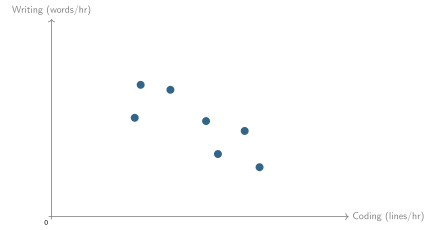
PPS is the convex hull
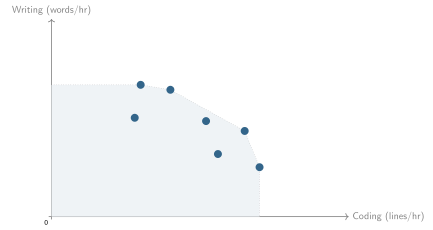
Smooth approximation: constant-elasticity PPS
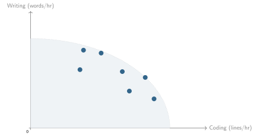
A model of AI adoption
Ingredients
- Human capabilities bundled in a convex production possibility set (PPS)
- AI capabilities limited by human supervision/attention time
- (Flexible task allocation responsive to skills and job requirements)
The worker’s problem
\[\max_{x} \; F(x) = \left(\sum_{i=1}^N \theta_i^{1/\sigma} x_i^{1-1/\sigma}\right)^{\sigma/(\sigma-1)}\]
subject to
\[ \left( \sum_{i=1}^N (x_i/s_i)^{1+1/\gamma} \right)^{\gamma/(\gamma+1)} \leq B \]
\(x\) = activities, \(\theta\) = job requirements (CES), \(s\) = skills (CET), \(B\) = time in a day.
\(\gamma\) = elasticity of transformation (PPF curvature)
\(\sigma\) = elasticity of substitution (isoquant curvature)
Different jobs have different requirements
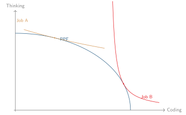
Optimal task mix depends on skills and requirements
\[ x_i \propto s_i^{(1+\gamma)\sigma/(\gamma+\sigma)} \theta_i^{\gamma/(\gamma+\sigma)} \]
Productivity is a CES-weighted average of skills
Output per unit of time \[ \Phi = \left[\sum_k (s_k^{\sigma-1} \theta_k)^{(\gamma+1)/(\gamma+\sigma)} \right]^{(\gamma+\sigma)/[(\gamma+1)(\sigma-1)]} \]
Jevons’ Paradox
Time share on activity \(i\): \[ \omega_i^A = \frac{(s_i^{\sigma-1} \theta_i)^{(\gamma+1)/(\gamma+\sigma)}} { \sum_k (s_k^{\sigma-1} \theta_k)^{(\gamma+1)/(\gamma+\sigma)} } \]
Increases in skill \(s_i\) if \(\sigma > 1\). Relevant range for knowledge work.
Shadow prices express scarcity (marginal cost of human time)
\[ \xi_i = \left(\frac{\theta_i}{s_i^{1+\gamma}}\right)^{1/(\gamma+\sigma)}, \]
High for activities that are required (\(\theta_i\) high) but hard to do (\(s_i\) low).
Shadow prices
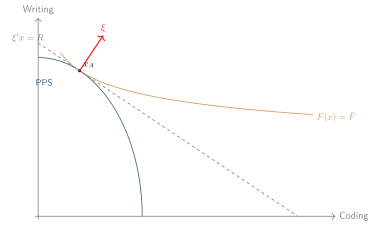
The budget set is larger than the PPS
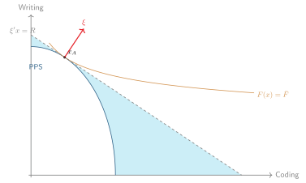
Suppose a machine can provide this amount of code and writing per hour
Would you buy it?
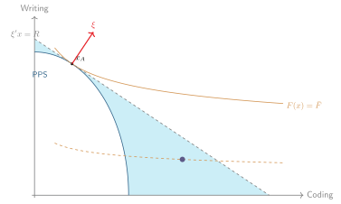
How about now?
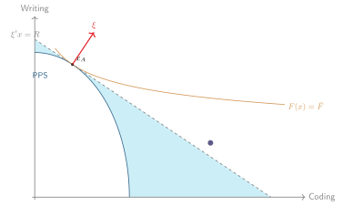
AI alone is still worse than human alone
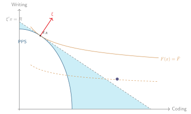
But AI + human now better
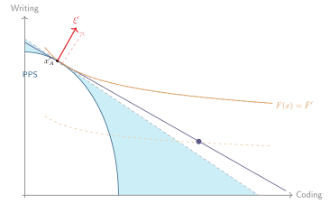
AI
What can AI do?
AI can perform any combination of \(\{t_1, \dots, t_N\}\) tasks, but requires supervision.
\[ \max_{x, x_{\text{human}}, \mu} \; F(x) \] \[ x_i = x_{i,\text{human}} + \mu_i t_i \] \[ \sum_i \mu_i + g(x_{\text{human}})\leq B \]
AI + human = convex hull
\[ X_{AI} = \{x : \sum_i x_i/t_i \leq \mu B\} \]
\[ X_{\text{human}} = \{x : g(x) \leq (1-\mu)B\} \]
\[ X = X_{\text{human}} + X_{AI} = \{x : x = x_1 + x_2, x_1 \in X_{\text{human}}, x_2 \in X_{AI}\} \]
AI + human = convex hull
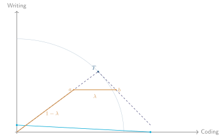
AI has an absolute but not comparative advantage
More capable AI will get used for coding
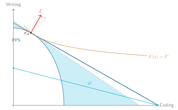
Adoption
When to adopt AI?
Whenever the value of AI tasks,
evaluated at the shadow prices of the human PPS,
exceeds your current output.
Adopt AI for first task \(i\)
\[ t_i > \left( \frac{\gamma}{\gamma+1} \right)^{\gamma/(\gamma+1)} s_{i} \omega_{oi}^{-1/(\gamma+1)} \]
\[ \frac{t_i}{s_i} > \left( \frac{\gamma}{\gamma+1} \right)^{\gamma/(\gamma+1)} \omega_{oi}^{-1/(\gamma+1)} > 1 \qquad \text{if } \gamma < \infty \]
Multitask adoption
Order tasks by highest \(\omega_{oi}^{1/(\gamma+1)}t_i/s_i\).
There exist \(\chi_1 < \chi_2 < \dots < \chi_N\) such that AI is used for the first \(k\) tasks if and only if \[ \chi_{k+1} \geq \omega_{oi}^{1/(\gamma+1)}t_k/s_k \geq \chi_k \]
The general structure
All results depend on convexity, not on CES–CET:
- Any convex PPS \(X_A = \{x : g(x) \leq B\}\) with quasi-convex hom(1) production function \(F\)
- Shadow prices \(\xi\) defined by tangency (supporting hyperplane)
CES–CET gives closed forms; the geometry works for any \(F\) and \(g\).
Convexity is a reduced-form way to capture task complementarity within a fixed time budget.
Model predictions
- Region of non-adoption: absolute advantage is not enough.
- Fast adoption but small productivity effects past this threshold.
- Intensive margin: Partial adoption even for augmented tasks
- Different jobs augment+automate different tasks.
Shout-outs
Manuelli & Seshadri (2014)
Neoclassical theory explains slow adoption of tractors (\(\varepsilon_{\text{horse}, \text{tractor}} < \infty\)).
Garicano, Li and Wu (2026)
Human capabilities in strong bundles serve as bottlenecks to AI.
Freund and Mann (2026)
Automation reshapes the task mix of jobs (\(\sigma=1, \gamma=\infty\)).
Jones (2025)
Complementarity (low \(\sigma\)) matters for progress more than benchmarks (\(t_i\)).
Empirical example
Data sources
Antropic Economic Index (AEI)
Task success rates, human times and AI times for O*NET tasks, March 2026. Aggregate to 332 Intermediate Work Activities (IWAs).
\[ \tau_i = \frac{t_i}{s_i} = \frac{\text{human time}}{\text{AI time}/\text{success rate}} \]
O*NET occupational task frequencies
Use task frequnencies \(\lambda_{oi}\) (daily, weekly, etc) and approximate \[ \omega_{oi} \approx \frac{\lambda_{oi}}{\sum_j \lambda_{oj}} \]
Task time shares across 1,016 occupations
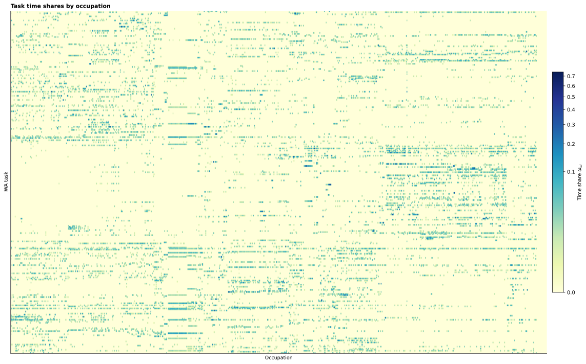
Task-level human-time/AI-time ratio
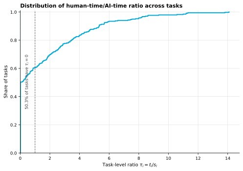
Distribution of adoption thresholds
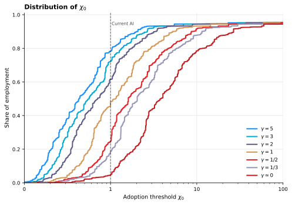
AI time share
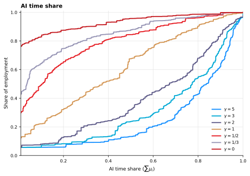
How many tasks does AI augment?
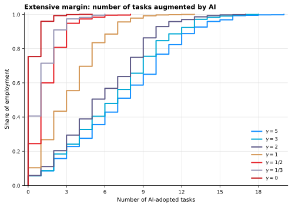
Which tasks get adopted first?
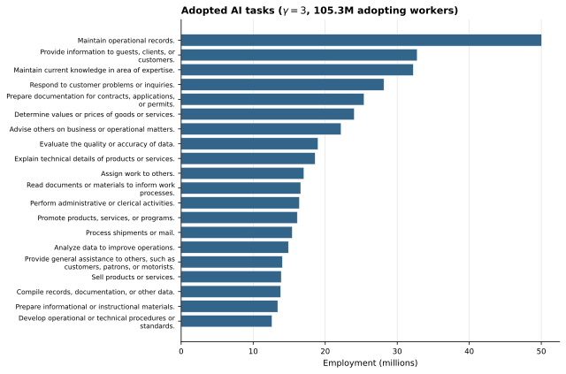
The figure to take away
Appendix
Acknowledgements


This research was funded by the European Union under the Horizon Europe grant 101061123 and by the National Research, Development and Innovation Office (Forefront Research Excellence Program contract number 144193). Views and opinions expressed are those of the authors only and do not necessarily reflect those of the European Union, the European Commission, or the National Research, Development and Innovation Office.